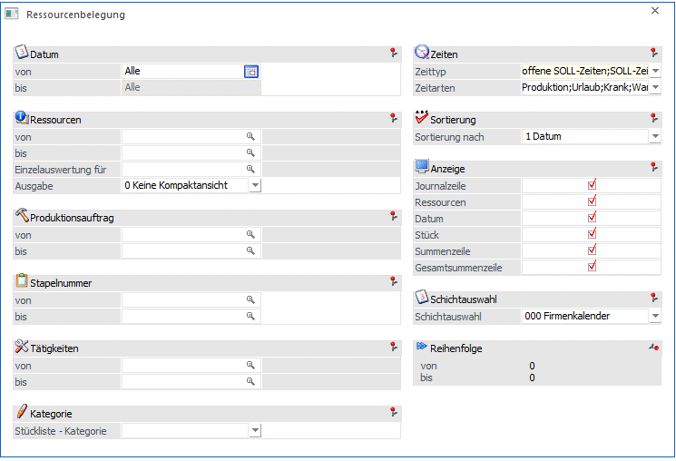

Im Menüpunkt
1 WinLine PPS
1 Auswertungen
1 Ressourcenbelegung
kann ausgewertet werden, wann welche Ressource für welches Projekt belegt ist.

Ø Datum von - bis
Einschränkung auf das Einplanungsdatum von reservierten Ressourcen/Tätigkeiten.
Ø Ressourcen von - bis
Einschränkung auf bestimmte Ressourcen.
Ø Einzelauswertung für
Wird in diesem Feld eine Ressourcennummer eingetragen, werden nur noch jene Zeilen ausgegeben, wo genau diese Ressource in einem Vorgang involviert ist, d.h. alle Zeilen wo die Ressourcennummer übereinstimmt und alle Zeilen mit der dazu passenden Vorgangsnummer.
Beispiel
Bei der Einschränkung in diesem Feld auf eine Mitarbeiter-Ressource werden evt. auch die Belegungen für Werkzeug-Ressourcen mitangedruckt, die für die jeweilige Tätigkeit benötigt sind.
Ø Ausgabe
Mit den Selektionen in diesem Feld können Ressourcenbelegungen nach verschiedenen Kriterien komprimiert werden. Die Ausgabe erfolgt je nach Selektion auch in Kombination mit der gewählten Sortierungsart. Es stehen die folgenden Optionen zur Auswahl:
ü 0 - Keine Kompaktansicht
Mit
dieser Option werden keine Belegungen komprimiert.
ü 1 - unterschiedliche Zeiten
Mit
dieser Option werden unmittelbar hintereinander vorkommende Belegungen mit
derselben Vorgangsnummer auf eine gemeinsame Zeile komprimiert.
Beispiel
Eine Tätigkeit findet von 8 bis 9 Uhr statt, wofür drei Ressourcen belegt sind. Aus diesen 3 Ressourcenbelegungen wird nun eine Gesamtbelegungszeile ausgegeben. Die beteiligten Ressourcen werden im Beschreibungstext der Zeile mit der Ressourcennummer angedruckt (z.B. 1-1, 3-1, 5-1).
ü 2 unterschiedliche
Tätigkeiten
Mit dieser Option werden alle "gleichen" Tätigkeiten
zusammengefasst.
Beispiel
Dieselbe Tätigkeit wie im vorigen Beispiel findet zusätzlich auch noch an einem Tag von 13 bis 14 Uhr statt. Bei der Komprimierung nach dieser Option wird eine Gesamtbelegungszeile von 8 bis 14 Uhr angedruckt, allerdings mit einer Dauer von 2 Stunden. Auf dieser Art ist ersichtlich, dass die Tätigkeit zwischen 8 und 14 Uhr 2 Stunden lang geplant ist.
ü 3 - unterschiedliche Tätigkeiten
detailliert
Mit dieser Option wird die Ausgabe gleich wie mit Option "2
unterschiedliche Tätigkeiten" ausgegeben, allerdings wird zusätzlich nach
Produktionsaufträgen gruppiert.
Beispiel
An den folgenden Beispielen wird verdeutlicht, wie die gewählte Sortierung in Kombination mit Option "2 unterschiedliche Tätigkeiten" auswirken kann:
ü Sortierung nach "0 Ressource" ergibt eine Zusammenfassung, welche Tätigkeiten pro Ressource vorgesehen sind
ü Sortierung nach "1 Datum" ergibt eine Zusammenfassung der Tätigkeiten des jeweiligen Tages
ü Sortierung nach "2 Auftrag" ergibt eine Zusammenfassung der Tätigkeiten jedes Produktionsauftrags
Ø Produktionsauftrag von - bis
Einschränkung der Produktionsaufträge, die ausgewertet werden sollen.
Ø Stapelnummer von - bis
Einschränkung der Stapelnummern, die ausgewertet werden sollen.
Ø Tätigkeiten von - bis
Einschränkung der Tätigkeiten, die ausgewertet werden sollen.
Ø Stückliste Kategorie
Über diese Mehrfachauswahl-Combobox stehen alle im System angelegten Stücklisten-Kategorien zur Verfügung. Damit kann die Ausgabe auf reservierten Tätigkeiten/Ressourcen eingeschränkt werden, bei denen die selektierten Stücklisten-Kategorien hinterlegt sind.
Ø Zeittyp
Mit diesen 4 Optionen können Tätigkeiten nach verschiedenen Arten von SOLL-Zeiten bzw. nach IST-Zeiten ausgewertet werden. Es können mehrere Optionen auf einmal kombiniert werden.
ü offene SOLL-Zeiten
Mit dieser
Selektion enthält die Auswertung offene, noch nicht abgeschlossene bzw.
endgemeldete Zeiten für die selektierten Ressourcen
ü SOLL-Zeiten (Planungszeiten)
Mit dieser Selektion enthält die Auswertung "geplanten Zeiten", d.h.
SOLL-Zeiten, die im Zuge der Endmeldung erfasst wurden bzw. die einer IST-Zeit
zugeordnet werden kann.
ü Erfasste IST-Zeiten (noch nicht
endgemeldet)
Mit dieser Selektion enthält die Auswertung IST-Zeiten die zwar
erfasst aber noch nicht endgemeldet wurden.
ü endgemeldete IST-Zeiten
Mit
dieser Selektion enthält die Auswertung IST-Zeiten, die durch eine Endmeldung
"bestätigt" wurde (d.h. können nicht mehr geändert werden). .
Mit einer Kombination von der ersten, dritten und vierten Option werden beispielsweise alle offene SOLL-Zeiten und alle IST-Zeiten (erfasste und endgemeldete) in die Auswertung angedruckt. Wenn eine Tätigkeit abgeschlossen worden ist (dies kann vorerst mit Checkbox "abgeschlossen" in der IST-Zeitenerfassung, Reiter "Produktionsauftrag" oder auch mit der Endmeldung erfolgen), kann mit der zweiten Option ein Vergleich zwischen der IST-Zeiten beim Tätigkeits-Abschluss und der IST-Zeiten bei der Endmeldung ausgegeben werden.
Ø Zeitarten
Es kann die Ausgabe nach bestimmten Arten von reservierten Zeiten durch eine Auswahl in diesem Feld eingegrenzt werden. Es stehen die folgenden Arten zur Auswahl, wobei auch mehrere Arten für die Ausgabe gleichzeitig selektiert werden können:
ü Produktion
ü Urlaub
ü Krank
ü Wartung
ü Inspektion
ü Prüflauf
ü Feiertag
ü Reparatur
ü Kapazitäten
ü Simulation
ü Reservierung
ü Ressource ist verfügbar
ü Teilverplanung
Ø Sortierung
Hier kann entschieden werden, ob die Liste der Ressourcenbelegung sortiert nach
ü Ressourcen
ü Datum
ü Auftrag
ü oder Stapelnummer
ausgegeben werden soll.
Ø Anzeige
Durch Aktivierung der einzelnen Checkboxen kann selektiert werden ob
ü die Ressourcen
ü und das Datum
angezeigt werden sollen und ob
ü die Journalzeile
ü die Summenzeile
ü die Stückzahlen
ü und die Gesamtsumme
der Reservierungen angedruckt werden sollen.
Ø Schichtauswahl
Aus der Auswahllistbox kann eine Schicht ausgewählt werden, für die die Auswertung durchgeführt werden soll. Wird die Option 00 - Firmenkalender gewählt, werden alle Schichten ausgewertet.
Ø Reihenfolge von - bis
Einschränkung nach der Reihenfolge, die bei der Tätigkeit von der jeweiligen Ressourcenzeit hinterlegt ist.
Buttons
Ø Ausgabe Drucker / Ausgabe Bildschirm
Durch Anklicken des entsprechenden Buttons erfolgt die Ausgabe auf dem Drucker oder auf den Bildschirm.
Hinweis
Ob die Liste dabei direkt auf einen Drucker ausgegeben oder zunächst in den Spooler abgespeichert wird, kann über die Symbole bzw. eingestellt werden. Diese befinden sich in der Mesonic-Applikationsribbon in der WinLine.
Hinweis
Wird in der Einzelzeile der Tätigkeiten auf die Reservierungszeit mit der Maus geklickt (bzw. auf das Symbol mit der Zeitart), kann die Reservierung bearbeitet werden (nähere Informationen siehe Kapitel Kalendereintrag bearbeiten).
Ø Ende
Durch Drücken des Buttons "Ende" bzw. der ESC-Taste wird das Fenster geschlossen und es erfolgt keine Ausgabe.